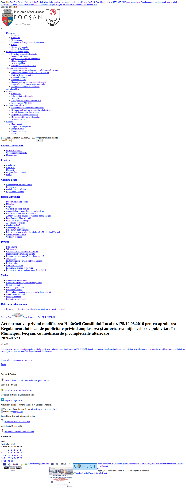

Proiect de hotarare (initiator primarul, 17.07.2026) care inlocuieste peste tot in HCL 175/2016 denumirea „Politia Locala a Municipiului Focsani” cu noua denumire „Directia Politia Locala” - modificare pur administrativa de denumire institutionala, fara schimbari de categorii, tarife sau restrictii pentru mijloacele de publicitate. Nu s-a gasit inca adoptarea (nicio HCL definitiva identificata la data acestei arhivari).
Verificat din nou 26.09.2026 (restanta noaptea 1): niciun continut nou, aceeasi sursa.
| Obiect | Regulamentul local de publicitate privind amplasarea si autorizarea mijloacelor de publicitate in Municipiul Focsani |
| Adresa | — |
| Nr. cadastral | — |
| Suprafata | — |
| Numar amplasamente | — |
| Tip mijloc publicitar | panou publicitar, mesh, ecran publicitar, firma |
| Durata contract | — |
| Pret de pornire | — |
| Pas de licitare | — |
| Garantie de participare | — |
| Cost caiet de sarcini | — |
| Data publicarii | 21.07.2026 |
| Termen cumparare documentatie | — |
| Termen depunere oferte | — |
| Sedinta de licitatie | — |
| Autoritate contractanta | Primaria Municipiului Focsani |
| Act administrativ | Proiect de modificare a HCL Focsani nr. 175/19.05.2016 |
| Fisier | Marime | SHA-256 |
| ph_regulament_publicitate.pdf | 351 KB | 54a7d2b8c8b0c33454def78248a3a426fa5237e5004d4da29eb53b67c53dcf87 |
| source_page.pdf | 238 KB | c194f22a7ece765a300bf3e58d9de1f4e351b59be377687d36091b75d69fcf17 |
| source_page.html (in arhiva privata) | 36 KB | cc4e669d8bd173e72c7217c110f8a1a313fbef7796a75bb8f6bacd66cb4f8818 |
| ph_modif_hcl175_regulament_publicitate.pdf | 206 KB | bcffe7238e7df9e1427e21dd0b52f62e5312b11f8b7097b134997ea439f9d90b |
| anunt_ph_modif_publ_pol.pdf | 245 KB | b7d643f986cd2ae04c8a531790459690771e368d3707cfb61692cb3179c74df8 |
| certificat_energetic.pdf | 459 KB | 2908b7921bcc665b816f134b88362e083c78b30fa485ac6f5cfe2d7dd1e11e5b |
| ghid_reintoarcere_2021.pdf | 4798 KB | f6a16d71549f159fdae3f0d1183a92e099fb06282d5edf3d3975e1f7984017fc |
| ph_modif_hcl175_regulament_publicitate_2.pdf | 206 KB | bcffe7238e7df9e1427e21dd0b52f62e5312b11f8b7097b134997ea439f9d90b |
| anunt_ph_modif_publ_pol_2.pdf | 245 KB | b7d643f986cd2ae04c8a531790459690771e368d3707cfb61692cb3179c74df8 |
Captura pentru regulament nu a fost realizata: sursa este un PDF — dovada este fisierul original + prima pagina ca imagine. Nu se fabrica nicio captura.
proiect de hotarare · capturat 2026-09-26T01:38:29+03:00
